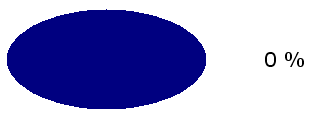
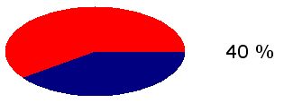
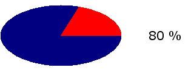

examples TOC
examples TOC$Date$
 Introduction
IntroductionThis example will run a ellipse (size:200x100) filled in natural way.
Percent text info is right aligned on a 100 pixels width area, at right side of progress shape.
[Top]
 PHP script
PHP scriptBuild the progress bar
require_once 'HTML/Progress.php';
$bar = new HTML_Progress();
$bar->setAnimSpeed(100);
$bar->setIncrement(10);
$ui =& $bar->getUI();
$ui->setOrientation(HTML_PROGRESS_CIRCLE);
$ui->setStringAttributes('font-size=20 width=100');
$ui->setCellAttributes(array(
'width' => 200,
'height' => 100,
'spacing' => 0,
'inactive-color' => 'red',
'active-color' => 'navy'
)
);
if (isset($_GET['cacheIMG'])) {
foreach (range(0,10) as $index) {
$ui->setCellAttributes(array('background-image' => 'temp/e'.$index.'.png'),$index);
}
} else {
$ui->drawCircleSegments('temp', 'e%s.png');
}
Loop to run the progress
do {
$bar->display();
if ($bar->getPercentComplete() == 1) {
break; // the progress bar has reached 100%
}
// your user-process should be put HERE !
$bar->incValue();
} while(1);
[Top]
 Render options
Render options font-size = 20 width = 100
width = 200 height = 100 spacing = 0 inactive-color = red active-color = navy
0 background-image = temp/e0.png 1 background-image = temp/e1.png 2 background-image = temp/e2.png 3 background-image = temp/e3.png 4 background-image = temp/e4.png 5 background-image = temp/e5.png 6 background-image = temp/e6.png 7 background-image = temp/e7.png 8 background-image = temp/e8.png 9 background-image = temp/e9.png 10 background-image = temp/e10.png
[Top]
 Output
Output



[Top]
 Play full example
Play full exampleRun the script below using :
<?php
require_once 'HTML/Progress.php';
$bar = new HTML_Progress();
$bar->setAnimSpeed(100);
$bar->setIncrement(10);
$ui =& $bar->getUI();
$ui->setOrientation(HTML_PROGRESS_CIRCLE);
$ui->setStringAttributes('font-size=20 width=100');
$ui->setCellAttributes(array(
'width' => 200,
'height' => 100,
'spacing' => 0,
'inactive-color' => 'red',
'active-color' => 'navy'
)
);
if (isset($_GET['cacheIMG'])) {
foreach (range(0,10) as $index) {
$ui->setCellAttributes(array('background-image' => 'temp/e'.$index.'.png'),$index);
}
} else {
$ui->drawCircleSegments('temp', 'e%s.png');
}
?>
<html>
<head>
<title>Custom Ellipse ProgressBar example</title>
<style type="text/css">
<!--
<?php echo $bar->getStyle(); ?>
body {
background-color: #FFFFFF;
color: #000000;
font-family: Verdana, Arial;
}
// -->
</style>
<script type="text/javascript">
<!--
<?php echo $ui->getScript(); ?>
//-->
</script>
</head>
<body>
<?php
echo $bar->toHtml();
do {
$bar->display();
if ($bar->getPercentComplete() == 1) {
break; // the progress bar has reached 100%
}
$bar->incValue();
} while(1);
?>
</body>
</html>
[Top]